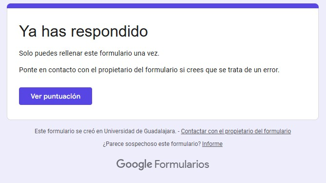
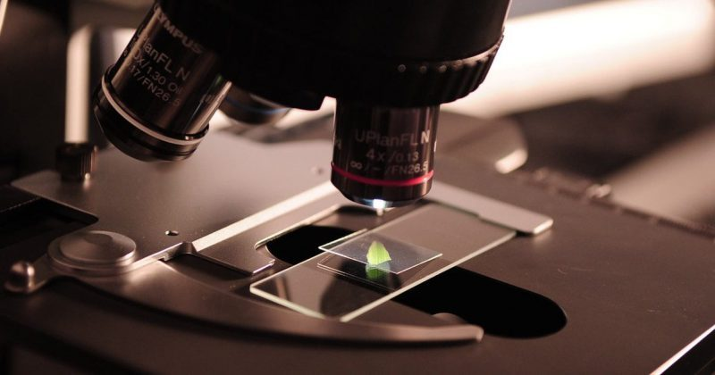

Examen inicial de Ciencia y Tecnología
Evaluación realizada para conocer nuestro punto de vista despues de observar el plan de estudios y los temas que se verán a lo largo del curso.
Recopilación de exposiciones y trabajos desarrollados a lo largo de la materia, explorando desde los fundamentos legales y el siglo de los inventos hasta las tendencias actuales en teleinformática.
Este curso analiza las invenciones e innovaciones científicas y tecnológicas desde la prehistoria hasta el siglo XXI. Busca impulsar la innovación para mejorar la competitividad empresarial y el desarrollo de México a nivel global, impactando directamente en la formación de los futuros ingenieros en Teleinformática.

Evaluación diagnóstica

Evaluación realizada para conocer nuestro punto de vista despues de observar el plan de estudios y los temas que se verán a lo largo del curso.